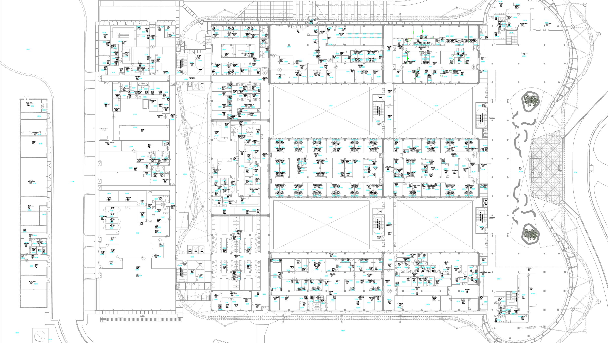

Seleccione Piso → Área → Subárea
en el panel izquierdo.
Fallas y eventos en tiempo real
| Fecha y Hora | N° Serie | Equipo | Tipo | Sector | Ant. | Estado | Motivo |
|---|
Seleccione el prestador de servicio técnico
Registro completo de eventos
| Fecha y Hora | N° Serie | Equipo | Tipo | Sector | Ant. | Estado | Motivo |
|---|
Completar checklist
